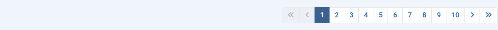

Propósito¶
La mayoría de los componentes tienen vistas de lista que muestran elementos de la base de datos. Puede haber cientos de elementos, miles quizás, o incluso millones. El Límite de la Lista predeterminado, el número de elementos mostrados en una página de resultados, suele ser 20. Debajo de cada página de resultados, si hay más resultados que el límite actual, encontrarás una barra de Paginación:

Con el primer número en la barra de Paginación seleccionado, se mostrarán en la lista los primeros 20 resultados, o el número de resultados que se haya establecido en el Límite de la Lista. Selecciona el siguiente número o el ícono de Siguiente () para pasar a la siguiente página de elementos.
El número máximo de páginas mostradas en una sola barra de paginación es 10. Sin embargo, se muestran números de páginas por debajo y por encima de la página actual para facilitar el avance o el retroceso de una página a la vez.
Aquí hay una captura de pantalla de la lista de Plugins habiendo pasado a la Página 10 con el Límite de la Lista establecido en 5:

Los Iconos
- Ir a la Primera página.
- Ir a la página Anterior.
- Ir a la página Siguiente.
- Ir a la Última página.
En la primera página, los iconos de la página Primera y la página Anterior están deshabilitados. En la última página, los iconos de la página Siguiente y la página Última están deshabilitados.
Traducido por openai.com